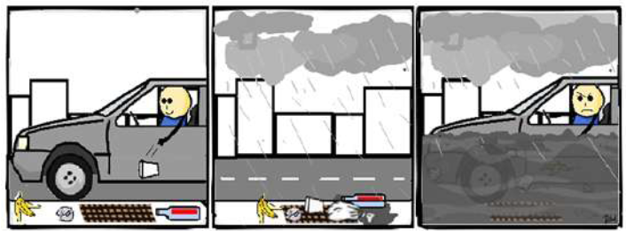
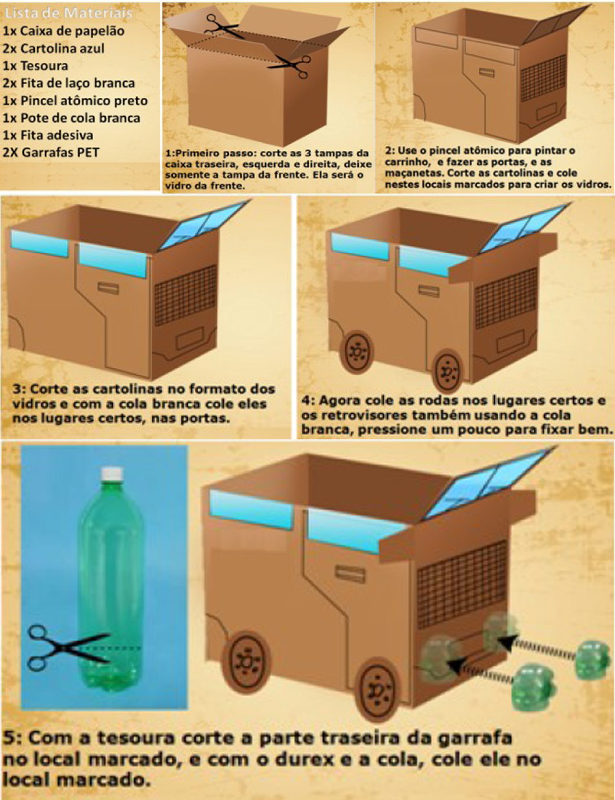
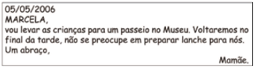
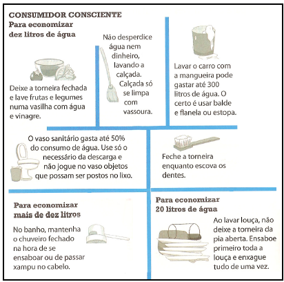
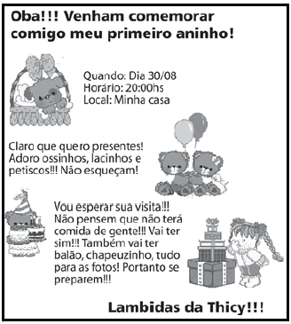

Leia o texto abaixo:
Rui Barbosa
Rui Barbosa foi um importante estadista, político, diplomata e jurista brasileiro. Nasceu na cidade de Salvador (Bahia) em 5 de novembro de 1.849.
Rui Barbosa apoiou o movimento republicano e teve uma grande participação no processo de Proclamação da República, que ocorreu em 15 de novembro de 1.889. Tornou-se o primeiro Ministro da Fazenda da história do Brasil República.
Foi também um brilhante escritor. Entre suas obras mais importantes, podemos citar: O Papa e o Concílio, Habeas Corpus, Cartas de Inglaterra, entre outras.
Disponível em: http://www.suapesquisa.com/biografias/rui_barbosa.htm. Acesso em: 23 maio 2011.O texto ao lado é:
Leia o texto abaixo:
Bolo da vovó
Ingredientes:
6 ovos (claras e gemas separadas);
1 xícara de açúcar;
1 xícara de farinha de trigo;
1 colher pequena de fermento em pó;
Margarina e farinha de trigo para untar a forma.
Recheio: 2 xícaras de goiabada cremosa.
Modo de fazer: Bata as claras em neve, adicione as gemas, o açúcar e bata. Acrescente a farinha, o fermento e misture com uma colher. Coloque em uma forma grande e redonda, untada e enfarinhada. Leve ao forno médio, preaquecido, por 30 minutos. Deixe esfriar, desenforme num prato grande e corte ao meio. Recheie com a goiabada. Leve à geladeira por 1 hora.
Fácil de fazer: bolos cremosos. Editora Alto Astral, s/d, p. 5.O texto acima serve para
Leia o texto abaixo e responda.
Arca de Noé
Três homens estavam discutindo qual era a profissão mais antiga do mundo.
O marceneiro disse:
— Quem vocês acham que fez a Arca de Noé?
O jardineiro rebateu:
— E quem vocês acham que regou o Jardim do Éden?
Finalmente, o eletricista falou:
— Quando Deus disse "Faça-se a luz!", quem vocês acham que passou a fiação?
Fonte: http://criancas.uol.com.br/ Acessado em 19 de mar/2013.Ao escrever este texto o autor teve como objetivo
Observe os quadrinhos abaixo e veja a mensagem que ele transmite.

A finalidade do texto é

Todo texto é escrito para um determinado fim, isto é, ele tem um objetivo específico. O texto ao lado foi produzido com a finalidade de
Um pastor costumava levar seu rebanho para fora da aldeia. Um dia resolveu pregar uma peça nos vizinhos.
— Um lobo! Um lobo! Socorro! Ele vai comer minhas ovelhas! Os vizinhos largaram o trabalho e saíram correndo para o campo para socorrer o menino. Mas encontraram-no às gargalhadas. Não havia lobo nenhum.
Ainda outra vez ele fez a mesma brincadeira e todos vieram ajudar; e ele caçoou de todos.
Mas um dia o lobo apareceu de fato e começou a atacar as ovelhas. Morrendo de medo, o menino saiu correndo.
– Um lobo! Um lobo! Socorro!
Os vizinhos ouviram, mas acharam que era caçoada. Ninguém socorreu e o pastor perdeu todo o rebanho.
Moral da história: Ninguém acredita em mentirosos! Fale a verdade!
BENNETT, William J. O livro das virtudes para crianças. Rio de Janeiro: Nova Fronteira, 1997.O texto ao lado tem a finalidade de:
Leia o texto abaixo e responda à questão.

Esse texto serve para
Nasceu nas senzalas que abrigavam os escravos no Rio de Janeiro no final do século XIX. Quando os nobres matavam um porco, os restos indesejados – pés, orelhas, rabo e tripas – eram dados aos escravos. Eles misturavam tudo isso ao feijão durante o cozimento e colocavam farinha assada por cima antes de comer.
DUARTE, Marcelo. O guia dos curiosos. Companhia das Letras.A finalidade do texto ao lado é:

A finalidade do quadro ao ladoc é orientar as pessoas a
Leia o texto abaixo.

Disponível em: http://thicy.zip.net/images/convite.JPG Acesso em: 04 fev. 2010.
Esse texto ao lado é